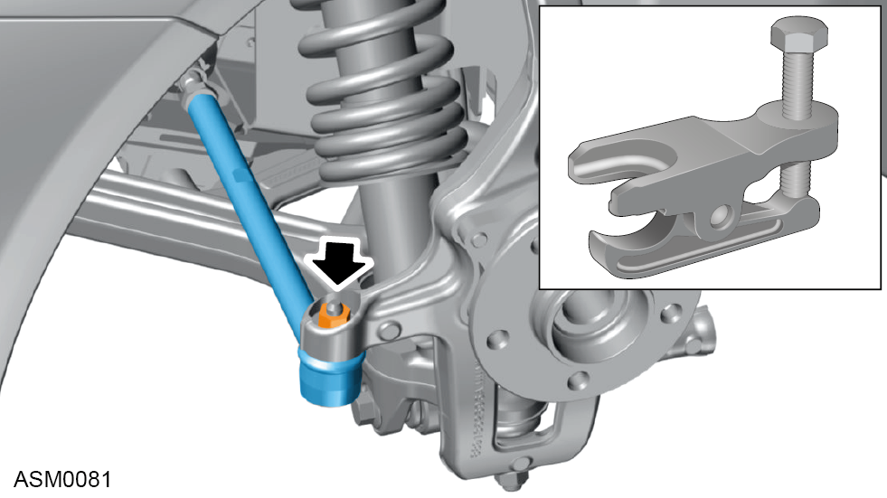
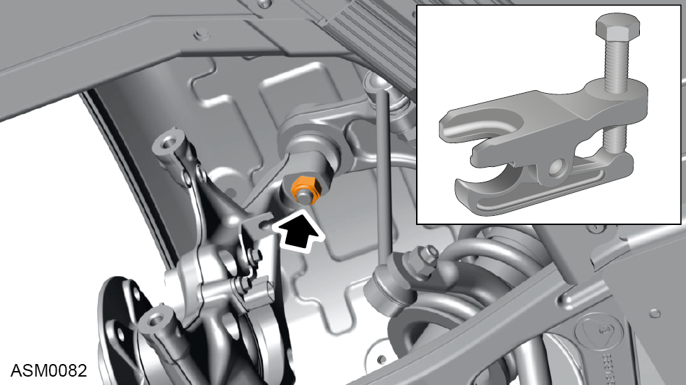
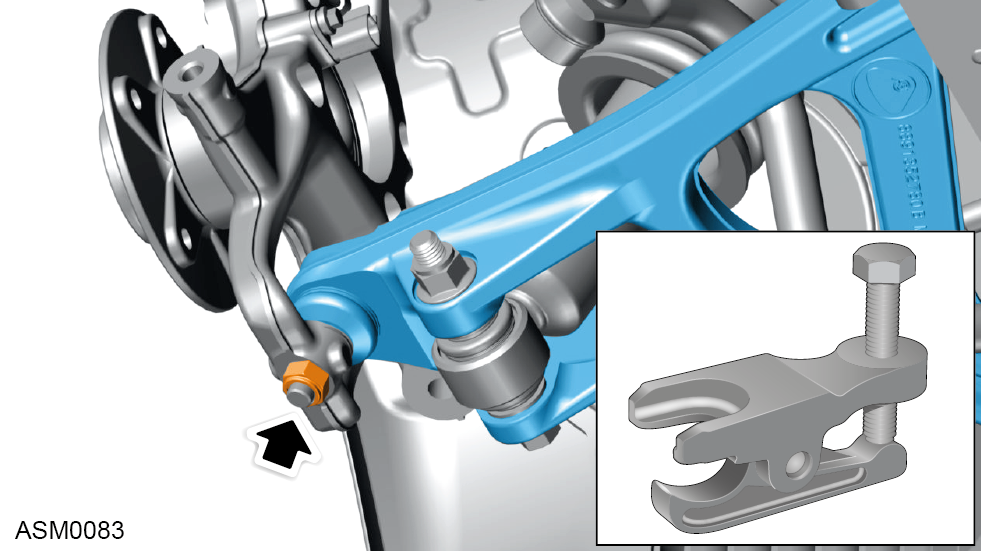
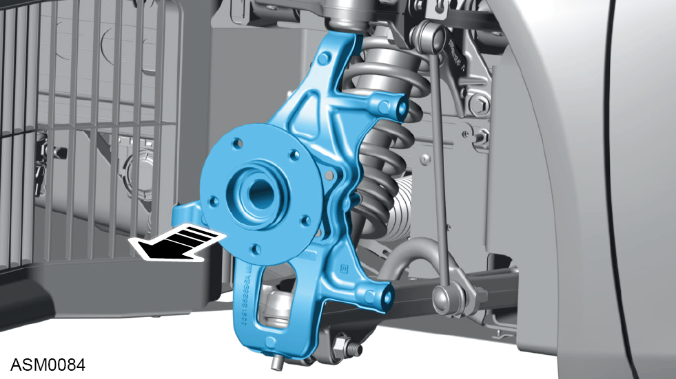
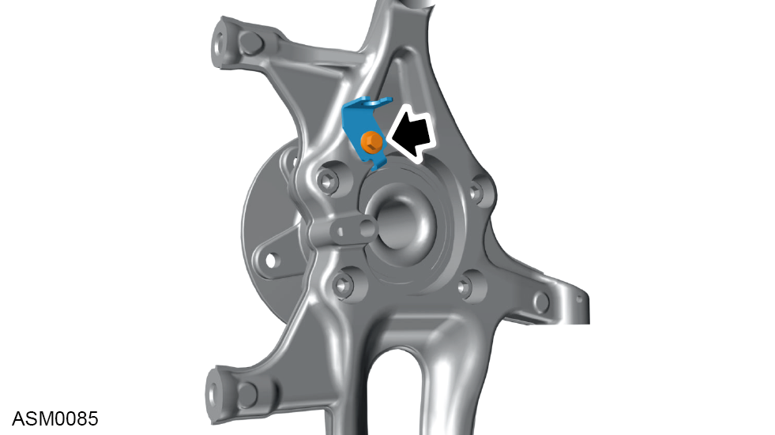
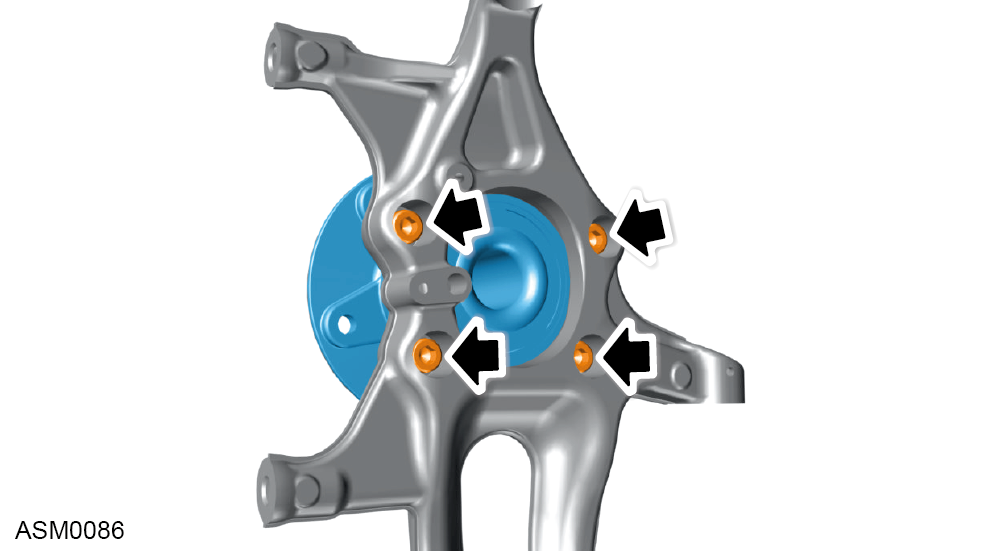

Hub Carrier - Front - Left Side
Print
Operation Code: 31.01.01-02
Removal
- Remove brake disc - front. Refer to procedure.
- Remove wheel speed sensor - front. Refer to procedure.

- Loosen but do not fully remove nut securing track rod end to hub carrier.
NOTE: Loosen the ball joint nut until the locking threads are clear of the ball joint pin threads.
- Use ball joint splitter to separate track rod end from hub carrier.
- Remove and discard nut securing track rod end from hub carrier. Torque 86 Nm.

- Loosen but do not fully remove nut securing upper wishbone ball joint to hub carrier.
NOTE: Loosen the ball joint nut until the locking threads are clear of the ball joint pin threads.
- Use ball joint splitter to separate upper wishbone ball joint from hub carrier.
- Remove and discard nut securing upper wishbone ball joint from hub carrier. Torque 86 Nm.

- Loosen but do not fully remove nut securing lower wishbone ball joint to hub carrier.
NOTE: Loosen the ball joint nut until the locking threads are clear of the ball joint pin threads
- Use ball joint splitter to separate lower wishbone ball joint from hub carrier.
- Remove and discard nut securing lower wishbone ball joint from hub carrier. Torque 86 Nm.

- Remove hub carrier assembly from vehicle.
Do not carry out further disassembly if component is removed for access only.

- Remove M6x16 bolt securing the wheel speed sensor harness bracket to hub carrier and swap to replacement component. Torque 8 Nm.

- Remove M10x30 bolts and washers (x4) securing wheel bearing assembly to hub carrier. Torque 70 Nm.
NOTE: Always record quantity and fitted position of washers.
Installation
- Installation is the reverse of removal procedure except for the following:
- Renew all lock nut fasteners that have been removed during removal procedure.